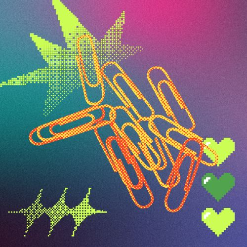

case study
Ferris Bueller ain't getting his day off.

Students on Singapore's national learning platform were struggling to keep track of their homework and assignments. With teachers posting tasks across different channels and subjects, nothing lived in one place. I was tasked with designing a centralised task management feature that would give students a clear, unified view of everything they needed to do.
The goal was simple: reduce the cognitive load of tracking schoolwork so students could spend less time figuring out what's due and more time actually doing it.
Students were juggling multiple communication channels to keep track of homework. Some teachers posted on the platform, others used messaging apps, and a few still relied on verbal announcements. The result was a fragmented experience where students regularly missed deadlines — not because they didn't care, but because they simply didn't know.
Parents were equally frustrated. They had no visibility into what their children were expected to complete, making it difficult to provide support at home.
"I check three different apps every night just to make sure I haven't missed anything. Sometimes I still do."
I conducted interviews with 12 students across different age groups and 6 teachers to understand how homework was currently assigned, tracked, and completed. I also ran a two-week diary study where students logged every time they encountered a homework-related frustration.
Three key patterns emerged: information was scattered, deadlines were unclear, and there was no sense of progress or completion.
Average platforms students used to track assignments
Of students missed deadlines due to scattered information
Student interviews conducted across age groups
I designed a unified task dashboard that pulled all assignments into a single view, regardless of which teacher or subject they came from. The dashboard featured subject-based filtering, deadline sorting, and visual progress indicators so students could see at a glance what needed attention.
Key design decisions included a card-based layout that grouped tasks by urgency rather than subject (since students think in terms of "what's due soon" not "what's for math"), and a simple check-off interaction that gave a satisfying sense of completion.
I also designed a parent-facing summary view — a weekly digest that showed upcoming deadlines and completed work, giving parents just enough visibility without overwhelming them.
After a pilot rollout across 8 schools, the task tracker showed a measurable impact on student organisation. Task completion rates improved, and teacher feedback indicated that fewer students were asking "what's the homework?" at the start of class.
The parent summary view had unexpectedly high adoption, with over 60% of parents in the pilot schools checking it at least once a week. This suggested a strong latent need that the platform hadn't previously addressed.
This project taught me the value of designing for a young audience. Students are surprisingly articulate about their frustrations when you ask the right questions, but they also have very low tolerance for anything that feels like extra work. Every interaction needed to earn its place.
The diary study was the most valuable research method here — it surfaced frustrations that students had normalised and wouldn't have mentioned in a standard interview. I'd use this approach again for any project where habits and workarounds are central to the problem.